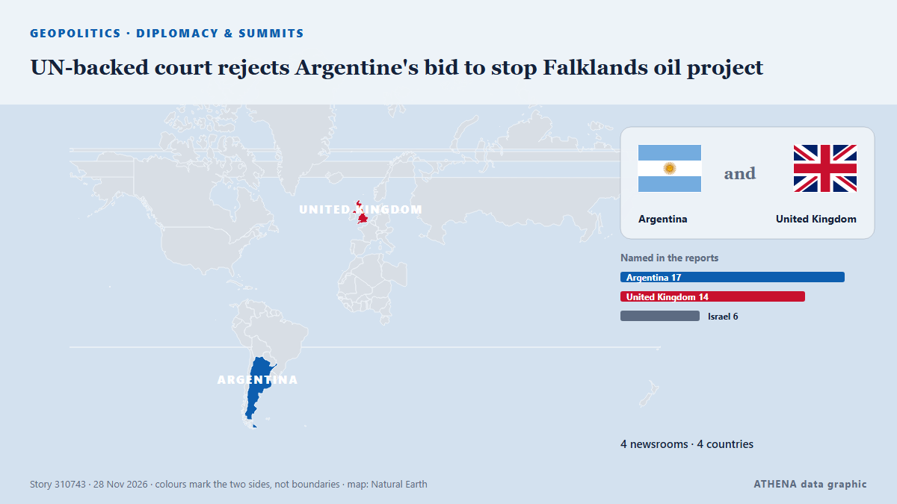

Διπλωματία & σύνοδοι
ΧορηγούμενοΠαρουσιάζεται από  Cybernetics and Artificial Intelligence Lab Welcome to the Cybernetics and Artificial Intelligence Laboratory, established at the Department of Business Administration of the National and Kapodistrian University of Athens. The lab is headed by Professor Dimitrios Thomakos. The lab aims to do research that can be published in top venues. Our research uses tools and methods of Artificial Intelligence, and lies in the following areas: - Forecasting - Decision making - Cyber security - Finance We are always looking forward to collaborating with exceptional students!
Cybernetics and Artificial Intelligence Lab Welcome to the Cybernetics and Artificial Intelligence Laboratory, established at the Department of Business Administration of the National and Kapodistrian University of Athens. The lab is headed by Professor Dimitrios Thomakos. The lab aims to do research that can be published in top venues. Our research uses tools and methods of Artificial Intelligence, and lies in the following areas: - Forecasting - Decision making - Cyber security - Finance We are always looking forward to collaborating with exceptional students!
| 15 Νοε | 0 |
|---|---|
| 16 Νοε | 1 |
| 17 Νοε | 0 |
| 18 Νοε | 0 |
| 19 Νοε | 0 |
| 20 Νοε | 0 |
| 21 Νοε | 0 |
| 22 Νοε | 0 |
| 23 Νοε | 2 |
| 24 Νοε | 2 |
| 25 Νοε | 6 |
| 26 Νοε | 8 |
| 27 Νοε | 2 |
| 28 Νοε | 0 |
Οι τίτλοι των ειδήσεων παρουσιάζονται στα αγγλικά, όπως δημοσιεύτηκαν.

UN-backed court rejects Argentine's bid to stop Falklands oil project
Argentina had launched in September an arbitration process against London over the British-Israeli Sea Lion project off the disputed islands. από Le Monde (English)
Trump says trade deal reached between the U.S. and the Philippines
President Donald Trump announced a trade deal had been reached between the U.S. and the Philippines during a banquet with Philippine President Ferdinand Marcos Jr. από NBC News (World)
Trump urges Putin to end 'military aggression' in Europe
WEST PALM BEACH: US President Donald Trump said Thursday he had asked Vladimir Putin to “pull back all military aggression” against Europe, in a shift in tone towards the leader Russian he called his… από Business Recorder
Zelensky criticises ‘strange’ Trump-Putin friendship in BBC interview
Ukraine's president voices frustration with US and says it is not pushing Russia hard enough in peace talks to end the war. από BBC News
Trump says Iran victory is 'at hand' as he presses Tehran for a deal
According to the US president, Washington has "victory at hand" από TASS (English)
Jared Kushner says Putin has shown ‘restraint’ in Ukraine and promised not to use nuclear weapons
U.S. presidential envoy Jared Kushner claimed that Vladimir Putin had promised not to use nuclear weapons in Ukraine, speaking in an interview with the MD Meets podcast. από Meduza (English)
Trump says Putin can come to G20 if he wants
PALM BEACH, Florida, Nov 26 - US President Donald Trump told reporters on Thursday he did not know if Russian President Vladimir Putin would attend next month's G20 meeting in Florida, but if it were… από The Straits Times
EU Leaders Open Talks on 2028-2034 Budget at Brussels Summit
EU leaders open talks in Brussels on the bloc's 2028-2034 budget, as António Costa pushes a compromise that trims €204 billion from the Commission's plan. από To Vima (English)
President Zelensky thanks Americans for their support in Thanksgiving message
Ukraine remains strong thanks to the support of many American friends. από Ukrinform (English)
Erdogan hosts eastern Libya commander Haftar in Ankara in first formal visit
General Khalifa Haftar, commander of the armed forces in eastern Libya, has paid his first visit to the Turkish capital to discuss security, energy and economic ties amid Türkiye’s continued efforts… από Hürriyet Daily News
Pro-monarchist Iran activists disrupt Paris event: videos
Activists backing Iran's ousted monarchy disrupted an event in Paris aiming to amplify the voices of Iranian women, prompting a bitter dispute Thursday between supporters of the deposed shah and… από Al-Monitor
Trump administration abandons business deals as incentive for Russia to end Ukraine war, shifts back to ‘land for peace’ approach, FT reports
U.S. President Donald Trump said he has no specific timeline for ending the Russia–Ukraine war. από Meduza (English)
Meloni: We're light-years away from solution on EU budget
Italian Prime Minister Giorgia Meloni stated on Thursday that the bloc is "light-years away" from the solution regarding the European Union multiannual budget. από AzerNews
Italy's Meloni concerned after Ukraine attack on Russian ship in Libya
Italian Prime Minister Giorgia Meloni spoke in Brussels ahead of a European Union leaders’ meeting convened to discuss the bloc’s next long-term budget and a new loan to help Ukraine meet its… από Africanews (English)
20:06 Lukashenko ready to fly to Moscow with Zelensky for talks with Putin President
The Belarusian president believes a meeting like this would be productive. από TASS (English)
One of Ireland's largest extras agencies is ending operations in the Republic over new rules
The Extras Department is based in Belfast but operates across Ireland. από TheJournal.ie
Iran says Israel trying to deceive US into war with chemical weapons claim
Iranian Foreign Minister Abbas Araghchi accused Israel of attempting to mislead the United States into a conflict by falsely claiming that Iran is developing chemical weapons. από Arab News
Melania Trump helps reunite 9 children with families amid Ukraine war
First Lady Melania Trump has reunited nine children with their families amid the war between Ukraine and Russia, a White House press release said. από UPI World News
Trump spares turkeys Freedom and Feathers from fowl Thanksgiving fate
Trump said 2027’s turkeys could stay overnight in the new White House state ballroom. από The Straits Times